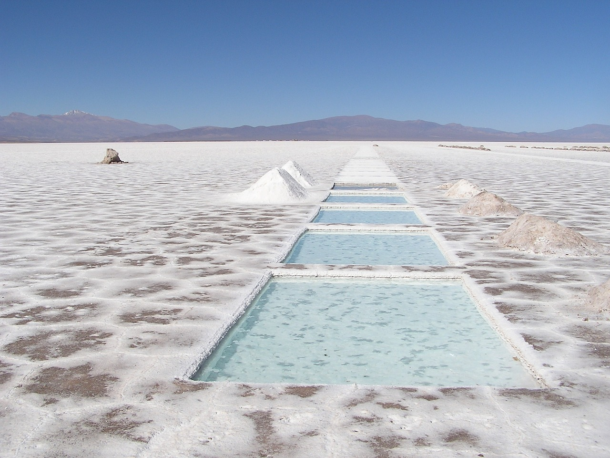
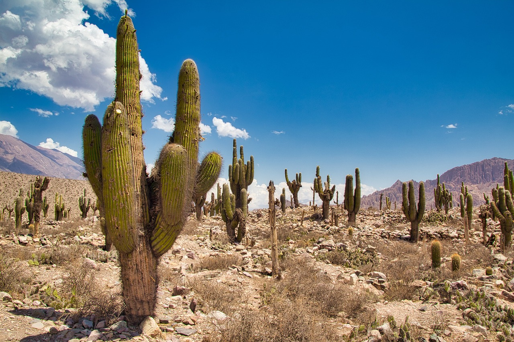

La Región Norte y Nordeste Argentina está integrada por las Pcias. de Catamarca, Chaco, Tucuman, entre otras... más info

Entre las Pcias.que integran la Región Central y Nuevo Cuyo encontramamos a Córdoba, Mendoza, S. Luis ... más info

Integran la Región Sur, las provincias de Neuquén, Santa Cruz, Antártida.... . más info